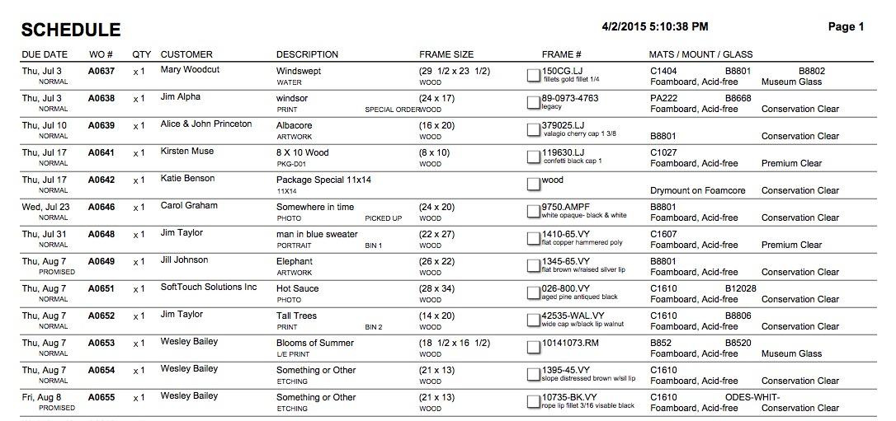
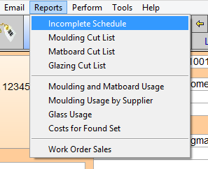

Print Incomplete Schedule
This document will improve production flow in your back room or manufacturing facility.
-
The report lists all or the found set of incomplete Work Orders, omitting any estimates and orders 'on hold.' Check boxes are included to handily tick off completed orders.
-
It is another way of viewing your incomplete list and creating work flow.
How to use the printed Incomplete Schedule
-
While the report is similar to the document you can create with the Print List button, the advantage with the Incomplete Schedule is that is also shows:
-
the moulding number for Frame1
-
up to 3 mats
-
the 1st mounting entry
-
the 1st glass entry…
-
for all incomplete Work Orders; all on one page.
-
-
As items are cut/assembled, they can be checked off.
-
When the job is completed, the location of the finished piece can be written on the page.
-
Take the page back to the computer screen: in the Work Order list view, each completed Work Order can be marked as completed and the location field selected. This will help the sales person to quickly locate the piece when the customer comes to pick it up.
Print Preview of Incomplete Schedule

How to Print a Schedule of Incomplete Work Orders
-
Go to the specific Work Order you need to print, or perform a Find for the Work Orders you wish included in this report.
-
On the Work Order (form view), in the menu bar, click Reports and choose Incomplete Schedule.

OR
-
Click the Print Documents sidebar button.

-
The Print Documents window opens.

-
Click the Schedule of Incomplete button.
-
A dialog box appears.

-
Choose All or Found Set.
-
The Schedule window appears. Click the Printer icon to print. Click the Main Menu or the List View icon to exit this window.
Last modified 5/11/2023.
© 2023 Adatasol, Inc.